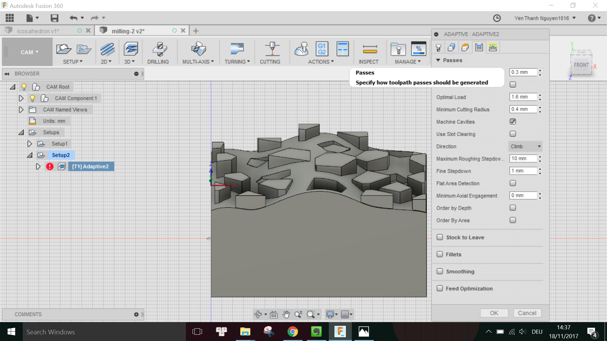

The assignment of this week was to mill a block of foam using the Roland MDX40 CNC milling machine available in the FabLab. We learned about different types of milling bits and how to determine the appropriate bit to be used for the material and its block size. We also learned how to set up the parameters for the milling job using the free CAM tool in Fusion 360.
First I designed a Voronoi pattern in Rhinoceros and exported it as .DXF file.
Then I imported the .DXF file into Fusion using the menu Insert -> Insert DXF, and extruded this pattern with various extrusion lengths on top of a 3D block which has the size 100mmx80mmx50mm. This is because the foam block that I get has the size 100mmx80mmx80mm.
I put more outward extrusions than inward extrusions because the milling bits I am going to use have a minimum diameter of 3mm, thus it is not going to be able to mill sharp corners from the inside, but would do better when milling from the outside of the corners. I also made sure that the height of the extrusions do not exceed the Body length of the bits I want use. When finished with the modelling, I go to the CAM Environment in Fusion 360 to set up the CNC milling job.
First I have to create a new Setup under the SETUP menu, where I pick the directions of the X,Y,Z axes as well as the origin point for the milling job:
Under the tab Stock, I have to specify the dimensions of my block of material. In this case, I put the height to be just as the height of my model (57mm) instead of the block's actual height (80mm) so that the machine does not have to remove any material on the top of the block before milling the parts belonging to the model. This is only possible because the origin point is picked on the top of the block.
Finished with the setup, now I have to choose the type of Milling. As suggested by Daniele in the lecture, for the rough cut we can use Adaptive Clearing, which is found under the 3D menu.
Here I click on Select (Tool) to open the Tool library, and added the parameters I measured using the caliper for the 4mm-diameter flat end tool I want to use for the rough cut as followed:

Under the tab Passes I have to specify, among others, the Tolerance of the rough cut, which I put in 0.3mm but later on learned that it should a bit more for the rough cut (around 1mm) because this is the distance between the surface of the cut and the surface of the actual model.
When done with the settings, I go to ACTION menu and choose Simulate to see the milling simulation. Luckily, there were no collisions detected for this rough cut.
Thus I went on to export the milling job for the machine by clicking on Post Process and choose the Roland configuration:
I learned from Dima that I have to also choose the right Roland model under the Property field. In this case, I have to put Yes next to the MDX40 model and No for the other models.
Then I pressed Post and now I can save the rough cut milling job with the extension .PRN into a USB stick to be used with the Roland.
In order to generate the finish cut milling job, I go to 3D menu and select Parallel:
This time, I want to use the 3mm-diameter ball end tool so that I have a smooth finishing surface on my object, thus I added the parameters for the tool in the Tool library as followed:
Note that the Body length of the tools are only measured when I have already placed the tools with the matching shafts into the machine's holder.
Again, I adjust some settings in the Passes tab, especially the Tolerance which has to be smaller this time.
When done, I run the Simulation again to check that the job has no issue:
This time there was warning that there is 1 collision, however, after checking the simulation video and with Daniele, this was not an issue thus I went on to the Post-processing to generate the job for the finish cut.
Also, taking the sugestion from Daniele that I could use the 3mm-diameter flat end toolfor another finish cut so that the parts with inward extrusion have a flat surface, I also generated another milling job for this second finish cut.
The first few things I have to prepare before executing the milling jobs are to insert the milling bit and corresponding shaft into the machine's holder,
attach the foam block firmly onto the wooden plate prepared for the machine, then clamp the wooden plate onto the machine's moving plate to fix it.
After making sure that everything is stable and firmly attached, I can use the dedicated software Roland VPanel for MDX-40A to move the milling head to the desired origin point, which is of course the same point where I set in the CAM setup:
Note that half of the milling bit's diameter has to be outside of the block for both X and Y direction, while on the Z axis the tip of the tool should just touch the surface of the material.
When happy with the position of the milling head, I can apply this point as XYZ origin in the software.
After setting the origin position, I proceed to load the .PRN file for the rough cut into the Output File List. Since this machine does not have automatic tool changing function, we can only have one job at a time for each cut in the Output File List.
Here is a photo of the machine while doing the rough cut:
And here is the end result of the rough cut:
It can be seen that because of the adaptive Stepdown, the rough cut produces variably sized staircase-like steps.
Afterwards, I changed the tool, move the block back to the original position and continue with the finish cut using the 3mm-diameter ball end tool. The good thing about the CAM software is that I can keep the same origin position and only have to measure precisely the Body length of the new tool and input this in the software in order to carry out the new milling job.
Here is a photo of the machine while doing the first finish cut:
Similarly, I continued with the second finish cut using the 3mm-diameter flat end tool, and in the end this was how my object looks like:
For this week assignment, I encountered some problem when changing the tool from rough cut to finish cut. The problem was that when measuring the Body length for the 4mm-diameter flat end tool used in the rough cut, I did not measure it precisely enough. As a result, although the first rough cut was fine, when I change to the 3mm-diameter ball end tool for the finish cut and use the same origin position, there was discrepancy. Although the simulation shows that the tool should mill on the surface of the material block, in fact it was milling a few milimeters above the block (in the air) instead. I stopped the milling job and I asked Daniele for help. Clearly, he saved my day by suggesting that I should set the Z-origin point lower such that now the tool's end just touches the surface of the material block. We were trying first with a smaller Z offset and observed the machine doing its work and finally decided to increase the offset a bit more (in this case, the final offset was -4.10mm). Afterwards, the job was resumed and was again doing as expected.
Besides the concepts learned in the lecture such as the milling bit's dimensions (flute, flute length, flute diameter, shaft, shoulder, body length), another thing I learned while doing the assignment was that the tolerance should be bigger for the rough cut and smaller for the finish cut because this is the distance between the surface of the cut and the surface of the actual model.
For the 3D model: Fusion 360 Project File